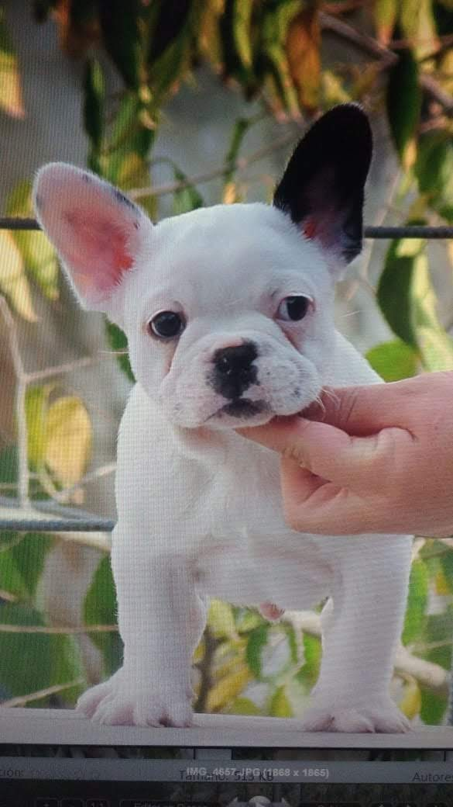
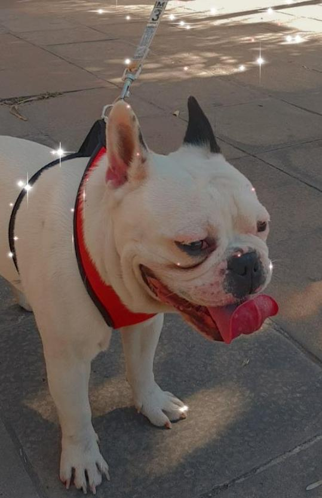
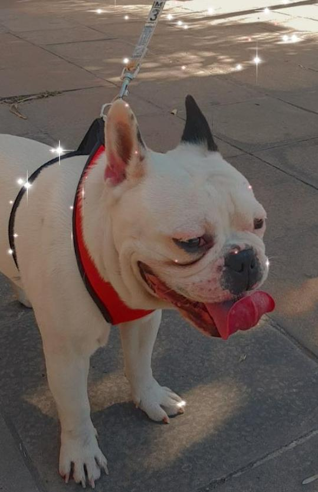

moro es un perro de raza bulldog frances que tenemos como mascota con mi novia
Cree este blog para hablar sobre mi mascota. Como ya escribi anteriormente moro es un bulldod frances
qué compramos con mi novia ya hace casi 2 años.
La historia comienza en junio del 2019 cuando me decidí que quería integrar a la familia una mascota y
como a mi novia le gusta la raza de perros bulldog
francés, empecé a buscar por internet un criadero de esa misma raza. Después de tanto buscar encontré
un criadero por zona de avellaneda.

La adaptación de moro no fue sencilla pero tampoco difícil, al ser una raza inteligente con paciencia
se puede lograr que haga lo que uno le indica.
Paso varios pocos meses para que haga sus necesidades
afuera, no tuvimos problemas para que el coma su alimento. Pero la manía de dormir en la cama
nunca sela pudimos sacar.
 
